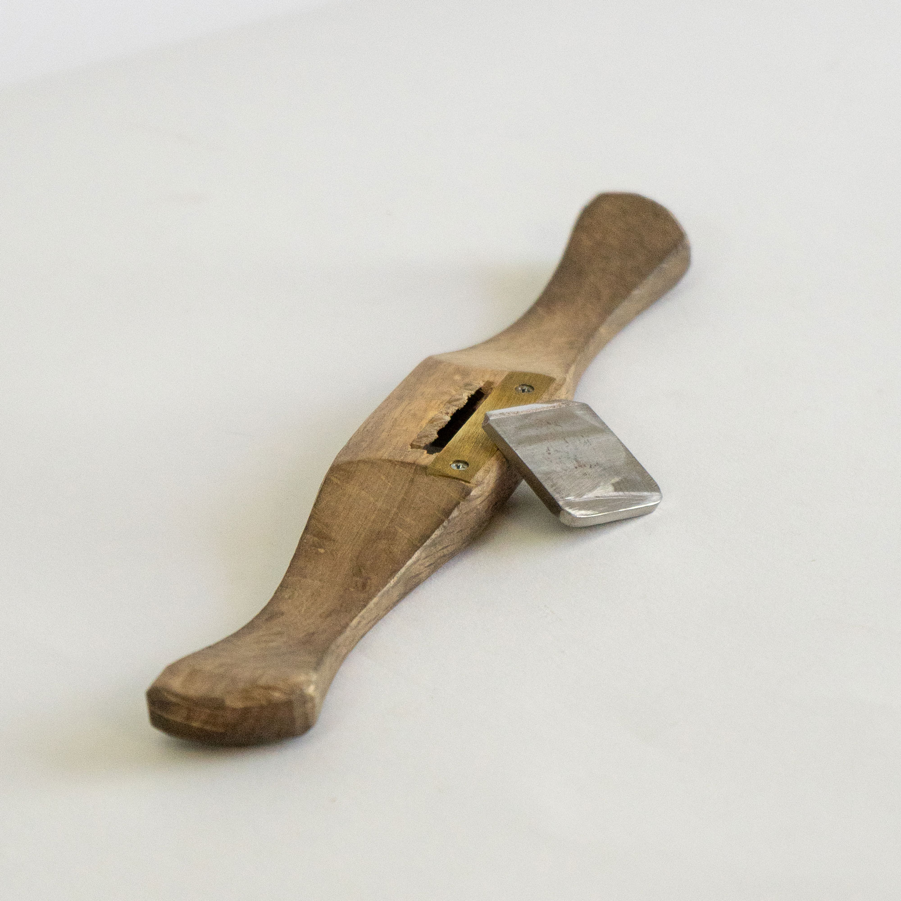
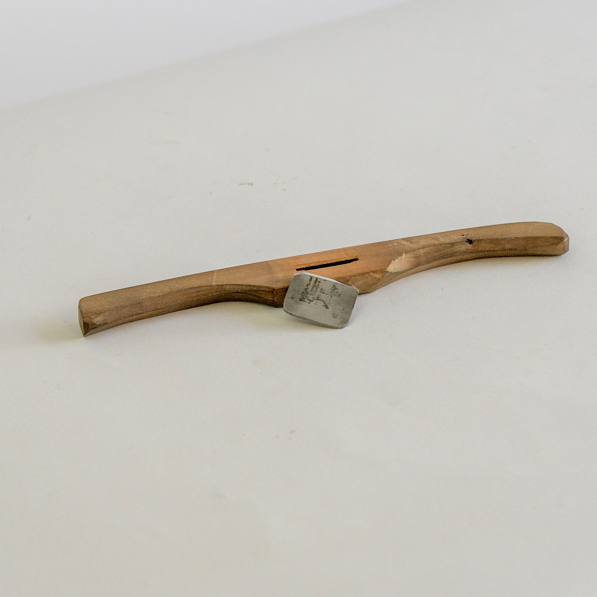

For an exterior curve, a flat bottom is most efficent.

For interior curves, multiple shaves of varying radius, in this case 50mm, must be made. A brass throat helps prevent the radius from wearing to a different curve over thousands of hours of use.
↓

And a chatter free, glassy, and beautifully textured surface of consistant radius can be achieved.